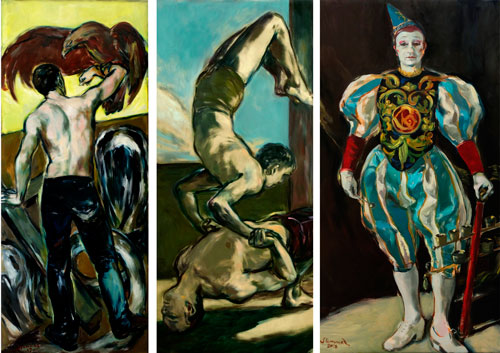

Details
Vernissage: Dienstag, den 11. September 2018
Ehrengast: „Gensi“ (Weißclown des Circus Roncalli)
Die Ausstellung war bis 20. September 2018 nach telefonischer Vereinbarung zugänglich.

Vernissage: Dienstag, den 11. September 2018
Ehrengast: „Gensi“ (Weißclown des Circus Roncalli)
Die Ausstellung war bis 20. September 2018 nach telefonischer Vereinbarung zugänglich.